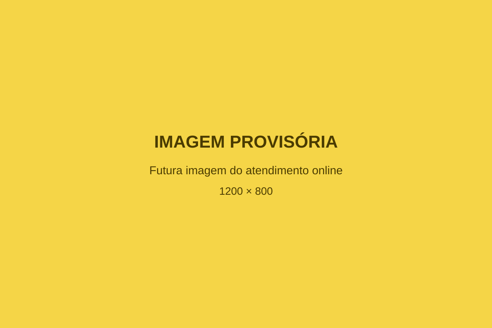

Contato
Uma conversa pode ser o primeiro passo para um cuidado mais consciente.
Entre em contato para receber informações gerais sobre a proposta de acompanhamento da Dra. Deyvla.
O WhatsApp será o principal canal para esclarecer dúvidas iniciais e organizar os próximos passos.
Falar pelo WhatsAppEscolha o canal mais adequado para você.
Canal para mensagens e contatos gerais relacionados à atuação da Dra. Deyvla Oliveira.
Redes sociais
Acompanhe conteúdos e informações publicados nos canais oficiais da Dra. Deyvla.
Atendimento online
A proposta permite organizar encontros e orientações à distância, com os detalhes confirmados no contato inicial.
Como começa essa conversa.
Entre em contato
Envie uma mensagem pelo WhatsApp para demonstrar seu interesse e apresentar suas dúvidas iniciais.
Receba as informações gerais
A proposta de acompanhamento e os próximos passos poderão ser explicados de forma clara e organizada.
Organize a avaliação
Caso a proposta seja adequada ao seu momento, a avaliação poderá ser organizada pelo canal informado.

Informação e acompanhamento, mesmo à distância.
O formato online facilita o contato e permite que encontros e orientações façam parte da rotina com mais praticidade.
Os locais atendidos, a plataforma utilizada, a disponibilidade e os detalhes do processo serão confirmados diretamente durante o contato inicial.
Perguntas frequentes
O atendimento será online?
A proposta prevê atendimento online. Os locais atendidos, a plataforma utilizada e os demais detalhes serão confirmados diretamente no contato inicial.
Como posso começar?
O primeiro passo é entrar em contato pelo WhatsApp para receber informações gerais e esclarecer dúvidas iniciais.
Como funciona o acompanhamento?
O acompanhamento considera a história, a rotina, as necessidades e os objetivos de cada pessoa. A estrutura definitiva será apresentada após a avaliação profissional.
O EvoLift faz parte do acompanhamento?
O EvoLift poderá ser utilizado como ferramenta de apoio para organizar registros de exercícios, cargas e evolução. A forma de utilização será definida de acordo com o acompanhamento.
Preciso frequentar uma academia?
As orientações relacionadas ao movimento e à atividade física devem considerar as necessidades, condições e possibilidades individuais. Essa definição depende de avaliação profissional.
Posso enviar informações clínicas pelo site?
O site não possui formulário para envio ou armazenamento de informações clínicas. O contato inicial deve ser realizado pelo canal indicado.
O atendimento substitui serviços de urgência ou emergência?
Não. Em situações de urgência ou emergência, procure os serviços de saúde adequados da sua região.
Cuidado também significa reconhecer cada contexto.
As informações deste site possuem caráter geral e educativo. Elas não substituem consulta, diagnóstico, avaliação ou orientação profissional individualizada.
Em situações de urgência ou emergência, procure imediatamente os serviços de saúde adequados da sua região.
Continue essa conversa nas redes sociais.
Acompanhe a Dra. Deyvla para receber novos conteúdos e informações sobre saúde e longevidade.
O próximo passo pode começar com uma conversa.
Entre em contato para receber informações gerais sobre a proposta de acompanhamento da Dra. Deyvla.
Falar pelo WhatsApp